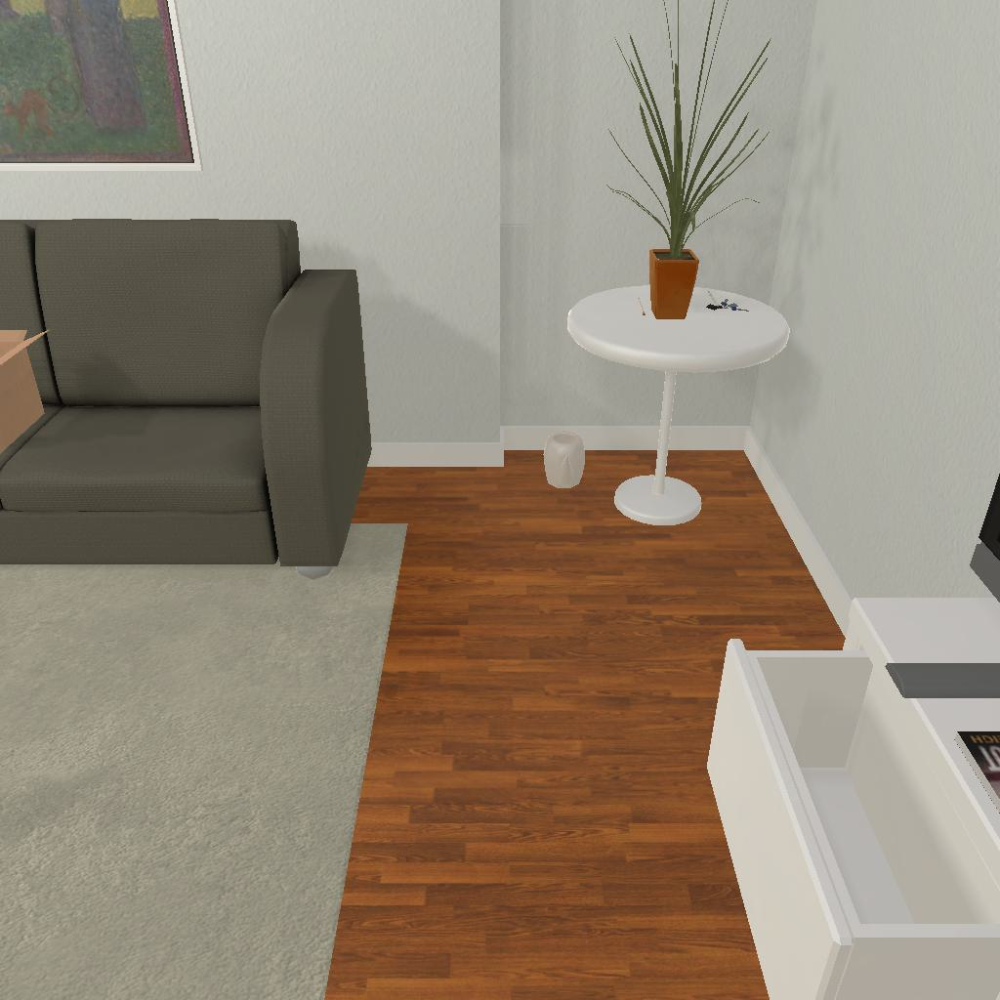

---------------------------------------------------------task: 5---------------------------------------------------------
--------------------------------------------------------------------------------------------------------------------------------------------------------------------
--------------------------------------------------------------------------------------------------------------------------------------------------------------------
Step:--------------------------------------------------------------------------13-------------------------------------------------------------------------------
----------------------------------------
VLM Prompt:
Image1:
Image2:
**Instruction**
1. Analyze the provided images to identify all visible household objects and compare the difference between images (e.h. whether the object is opened or not and taken on hand or not), focusing on those relevant to the task description "put a book in armchair."
2. Use the analysis of images and the task hint "The agent must find an object of the desired type, pick it up, find the correct location to place it, and put it down there." to answer the question: what is the most reasonable action in the choices for the task description "put a book in armchair"?
3. Decide and write the answer using the template: The answer is: (i): , where i is the real number. If there is no desired object in images, search every place based on **Initial Observation** to find the object. And if no one is exactly correct, choose a similar answer.
**Initial Observation**
You are in the middle of a room. Looking quickly around you, you can see armchair (1), sofa (1), coffeetable (1), drawer (1-4), sidetable (1-3), dresser (1)
**Answer Choices**
(1): go to armchair 1
(2): go to sofa 1
(3): go to coffeetable 1
(4): go to sidetable 1
(5): go to dresser 1
(6): go to drawer 2
(7): go to drawer 3
(8): go to drawer 4
(9): go to sidetable 2
(10): go to sidetable 3
(11): close drawer 1
(12): put book 1 in/on drawer 1
(13): examine book 1
**Answer**
Let's think step by step by following the instructions.
----------------------------------------
----------------------------------------
Original Response:
Image Analysis:
- In both images, we can see an armchair, a coffee table, a side table with a plant on it, and part of a sofa.
- The only difference between the two images is the presence of a book titled "THE PILOT" on the floor in image 2, which is not present in image 1.
Task Description Analysis:
- The task is to "put a book in armchair."
- The book is visible in image 2, which means it is available to be picked up.
- No other books or objects relevant to the task are visible in the images.
Initial Observation:
- Based on the initial observation, we have multiple locations to search for the book if it wasn't already found on the floor in image 2.
Decision:
Given that the book is already found and is visible in image 2 on the floor, the most reasonable action would be to pick up the book and place it in the armchair. However, none of the provided answer choices explicitly mention picking up the book from the floor. The closest action related to the task would be to examine the book, which could imply assessing the book before picking it up.
The answer is: (13): examine book 1.
----------------------------------------
----------------------------------------
>>> Refine Original VLM Response and Get Pure Action: examine book 1
----------------------------------------
-----------------------------------------------------------------
Running time: 34.1820433139801 seconds
Total Money: 1.909580000000001
-----------------------------------------------------------------
-----------------------------------------------------------------
Text Observation:This is a normal book 1
-----------------------------------------------------------------
UNSUCCEED